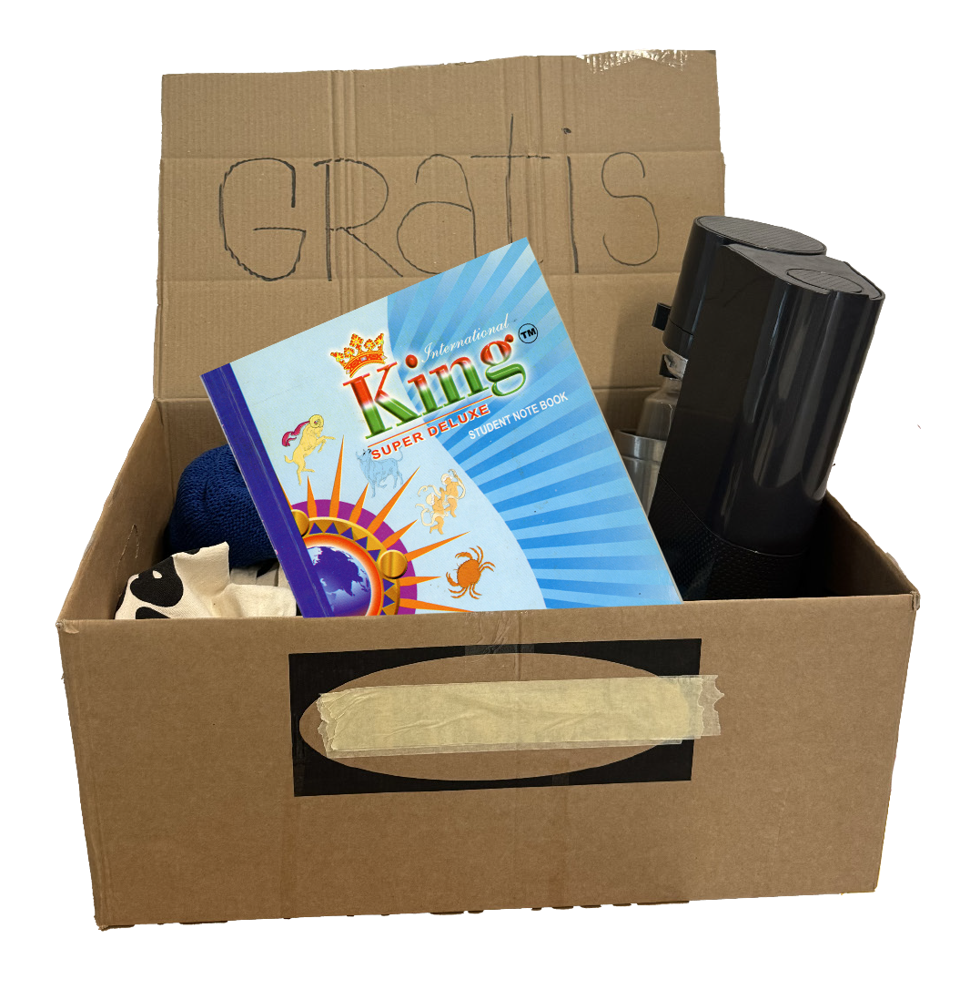

GRATIS LOVE begins with a notebook found in public space and filled with handwritten recipes, which serves as a catalyst for collective response.
OUR PURPOSE
To not let individuals feel overshadowed by centralized voices, we decided to create a(nother) platform for u to share what’s on your mind(perspective), at the same time, within a framework to create connections between people. Most important of all, for all to have fun and enjoyable art experiences!!WHERE ARE WE GOING?
The creations from each process of interacting with the notebook will be gathered and edited by us into a collective contributed art book. Following a launch party where all authors are invited to complete the experience package.